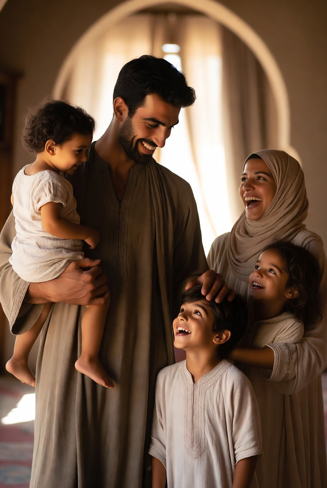
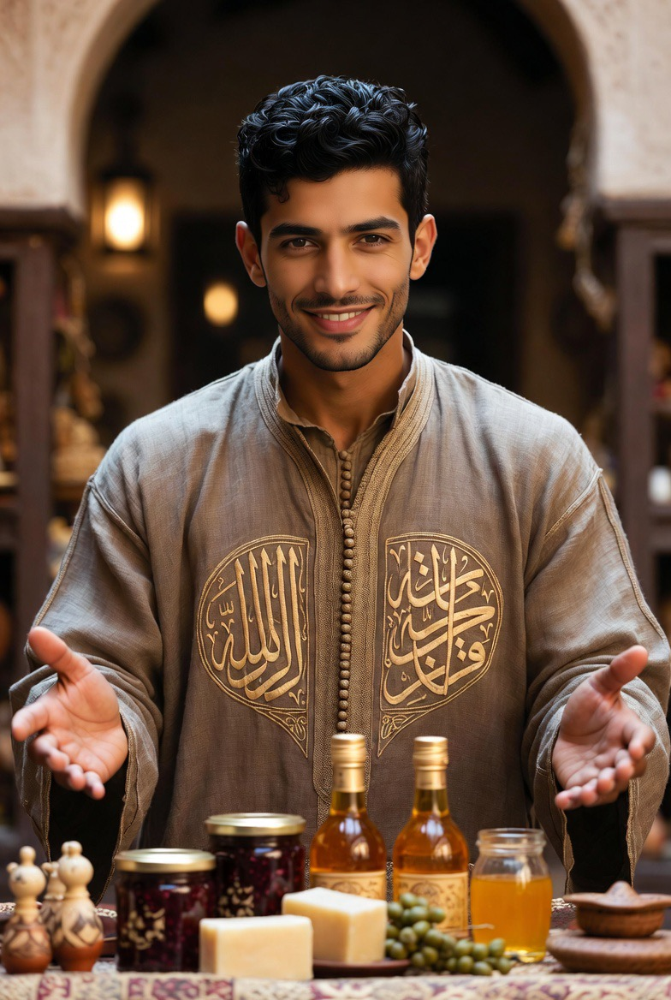

Dar al-Hiraf
La maison des métiers. Formation des jeunes par le geste, l’étude et la discipline du corps.

Dar al-Hiraf n’est pas un atelier touristique. C’est une école de résidence : les jeunes y vivent, travaillent, prient et se forment ensemble. Les disciplines — calligraphie, musique, zellige, plâtre, tissage, parfums, bois, fer — ne sont pas des cours isolés. Elles s’inscrivent dans le même rythme que la prière, l’étude, le corps, la table et la conversation du soir. S’y engager, c’est accepter d’être formé tout entier : main, regard, caractère, présence aux autres.
Ailleurs, ces métiers s’éteignent avec leurs derniers maîtres. Ici, ils reprennent souffle : chaque jeune homme qui entre au Dar al-Hiraf ne visite pas une tradition, il la continue. De cet engagement, il tire un métier — donc une indépendance qui ne dépend d’aucun employeur — et une place reconnue parmi ses frères : honneur, loyauté, discipline ne sont pas des mots d’ambiance, ce sont les conditions concrètes de la vie commune.
Ce temps de formation n’est pas une parenthèse hors de la vie : c’est sa préparation la plus sérieuse. Ce que le jeune homme reçoit ici — discipline, métier, sens de l’honneur — n’est pas fait pour rester entre ces murs : c’est ce qu’il apportera un jour à sa propre famille.
تعلّم فليسَ المرءُ يولدُ عالماً
وليسَ أخو علمٍ كمن هو جاهلُ
« Apprends : l’homme ne naît pas savant ;
celui qui sait n’est pas comme celui qui ignore. »
al-Shāfiʿī — VIIIe–IXe siècle
COMPAGNONNAGE
Futuwwa — l’idéal du compagnonnage
Dans le monde islamique médiéval, les métiers ne se transmettaient pas seulement comme technique : ils s’inscrivaient dans la futuwwa, un idéal de compagnonnage qui unissait la formation du geste à la formation du caractère — patience, générosité, loyauté envers le maître, retenue. Le maalem ne formait pas seulement une main habile ; il formait un homme.
Dar al-Hiraf reprend cette logique ancienne : la résidence, la discipline du corps, l’apprentissage du métier et la prière rythmée ne sont pas des éléments juxtaposés, mais une seule pédagogie. Chaque discipline enseignée ici porte en elle cette double transmission : celle du savoir-faire, et celle de la mesure intérieure qui le rend juste.
Les disciplines
Huit disciplines, une seule formation. Chaque métier porte en lui une pédagogie du caractère.

Calligraphie
Le qalam, la page, le souffle. Écriture comme discipline intérieure.
Au Maghreb, l’écriture arabe a développé sa propre voie : le khatt maghrebi, distinct des écritures orientales, aux courbes plus amples. Née en al-Andalus puis transmise à Fès, elle a formé pendant des siècles les copistes du Coran et les manuscrits de la Qarawiyyin. Apprendre le qalam, c’est entrer dans cette lignée précise.

Musique & chant
Oud, ney, voix. Rythme et mémoire.
La musique andalouse (al-âla), pratiquée à Fès, Tétouan et Rabat, est l’héritière des cours d’al-Andalus : après 1492, les musiciens expulsés d’Espagne y transmettent les nouba. Dans la tradition soufie, le chant accompagne aussi le rappel (dhikr) — musique comme discipline de présence, non comme divertissement.

Zellige
Géométrie, coupe, pose. La main au service de l’ordre.
Le zellige naît à Fès sous les Mérinides (XIIIe–XIVe s.) : chaque pièce est taillée au marteau puis assemblée à l’envers, souvent de mémoire. Dans la pensée islamique, l’entrelacs du motif renvoie à l’unité (tawhid) derrière la multiplicité. Apprendre le zellige, c’est une discipline de la main et du regard.

Plâtre & mocárabe
Stuc sculpté, relief, lumière.
Le mocárabe — alvéoles de plâtre sculpté — est l’une des inventions les plus originales de l’architecture islamique occidentale. Maturité en al-Andalus et au Maghreb : chaque alvéole, sculptée au couteau dans le plâtre frais, capte la lumière autrement selon l’heure — l’ornement devient horloge silencieuse de la maison.

Tissage & brocart
Soie, fil d’or, métier à tirage. Le geste lent du brocart de Fès.
نسجوا من الذهبِ الورودَ على الحريرِ
« Ils ont tissé d’or des roses sur la soie. »
Image du brocart de Fès

Parfums & essences
Rose, fleur d’oranger, jasmin, attar. Le nez, la main, la mémoire du jardin.
والطيبُ ذكرى الجنانِ في الأنفِ
« Le parfum est mémoire des jardins dans le souffle. »
Image classique du ṭīb

Bois & intaille
Sculpture, assemblage, patience du bois.
Le cèdre du Moyen Atlas est, avec le plâtre et le zellige, l’un des trois matériaux de la triade décorative marocaine. Plafonds à caissons et moucharabiehs des médersas mérinides : assemblage géométrique sans clou ni colle. Travailler le bois, c’est reprendre ce geste lent : la patience du matériau avant la virtuosité de l’outil.

Fer forgé
Feu, force, précision.
Les grilles de fer forgé marocaines descendent des ferronneries andalouses, portées au Maghreb par les artisans qui fuient la Reconquista aux XVe–XVIe siècles. Au feu et au marteau, le jeune apprend une discipline plus rude, plus physique — gouvernée par la même exigence de mesure.
ANCRAGE
Fès, capitale des arts et métiers
Ville-refuge des artisans andalous après 1492, siège de la Qarawiyyin — l’une des plus anciennes universités au monde —, Fès reste aujourd’hui un des derniers grands foyers vivants de l’artisanat traditionnel maghrébin.
C’est dans cette lignée que s’inscrit Dar al-Hiraf : non une reconstitution folklorique, mais la continuité d’un geste, d’une ville et d’une mémoire qui ont traversé le détroit et le temps.
Le tissage traditionnel

À Fès, le brocart — bahja, khrib — est un savoir-faire qui remonte au moins au XIIIe siècle. Sur le métier à tirage, soie et fil d’or composent des motifs de roses et d’arabesques.
La même tradition a traversé la Méditerranée. En Sicile, c’est grâce aux Arabes que l’art de la soie et du ṭirāz s’est implanté à Palerme ; sous les Normands, les Nobiles Officinae ont conservé et enrichi ce savoir-faire.
Au Riad, le tissage s’inscrit dans la même logique que les autres arts : formation par le geste, patience, beauté utile.
Parfums & essences
L’art marocain des senteurs — rose de Kelaât, fleur d’oranger, jasmin, attar — devient discipline de formation.

Au Maroc, le parfum n’est pas un accessoire. C’est un savoir de jardin, d’hammam et de cérémonie.
Au Dar al-Hiraf, cette discipline relie le riyāḍ à l’atelier, le pétale à la peau.

Le nez
Apprendre à distinguer, mémoriser, doser.

Le geste
Distillation, macération, assemblage. Patience de la main.

Les matières
Rose, fleur d’oranger, jasmin, ambre, bakhour.
Le corps formé
Force, endurance, lutte. Le corps n’est pas un ornement : il est instrument de présence et de discipline. Dans l’idéal de la futuwwa, le corps discipliné n’est pas séparé du métier — il en est le fondement.

Discipline physique
Entraînement harmonieux, force contrôlée, endurance. L’endurance formait, dans les corporations, le pendant de la patience exigée par le geste fin.
على قدر أهل العزم تأتي العزائم
« À la mesure des hommes de volonté viennent les grands desseins. »
Al-Mutanabbī — Xe siècle

Lutte & force
Corps à corps, respect, mesure. Au Riad, la force n’est jamais spectacle, mais mesure de soi — et présence à l’autre.
كنتُ أُقدِمُ إذا رأيتُ الإقدامَ عزماً، وأُحجِمُ إذا رأيتُ الإحجامَ حزماً
« J’avançais quand j’y voyais de la résolution ; je reculais quand j’y voyais de la sagesse. »
Attribué à ʿAntarah ibn Shaddād — VIe siècle

La résidence
Les jeunes vivent sous la même toiture. Ordre, service, présence.
Travail, prière, repas, silence : une journée d’ordre. La futuwwa n’est pas un mot ancien : c’est la forme concrète de cette vie commune.
Ce n’est pas une parenthèse de jeunesse : c’est un apprentissage complet, qui forme un homme capable de tenir seul — dans son métier, dans sa parole, dans sa foi.

CONTINUITÉ
La famille, cellule de la société
Dans la tradition islamique, la famille n’est pas une affaire privée parmi d’autres : c’est la cellule qui porte la société tout entière, et la première école où se transmettent la foi, la langue et les usages. On dit souvent, en arabe, que la famille est al-madrasa al-ūlā — la première école — avant même celle des maîtres.
Former un jeune homme au geste, à la prière et à la discipline n’est donc pas une fin en soi. C’est préparer l’homme qui, demain, tiendra une maison : un mari attentif, un père capable de transmettre à son tour ce qu’il a reçu — le métier, la foi, le sens de l’honneur.
Les enfants qui grandissent auprès d’un tel père héritent, avant même d’entrer au Dar al-Hiraf, du rythme et de la mesure qu’ils y retrouveront un jour comme élèves. Ainsi la chaîne ne se rompt pas : d’une génération à l’autre, la maison forme des hommes qui forment des familles, et des familles qui donneront à la maison ses futurs élèves — de futurs maris, de futurs pères, des hommes droits et fidèles à leurs racines.

PRODUCTION
Ce que la maison produit
Dar al-Hiraf ne forme pas seulement des mains : il en naît des objets, et certains d’entre eux se consomment. La confiture de roses, héritière de la tradition de Kelaât M’Gouna, la fleur d’oranger distillée des orangers du riad, le miel, les savons à l’huile d’olive — chacun de ces produits porte la marque de la maison et soutient, par sa vente, la vie de la communauté.
Ce qui sort du Dar al-Hiraf — zellige, pièces de bois sculpté, ferronnerie, confitures, essences — n’est donc pas un artisanat de vitrine : c’est ce qui, en partie, fait vivre la maison elle-même.
Une part de ces revenus finance directement l’entretien de la maison ; une autre revient aux artisans eux-mêmes, dès leurs premières pièces vendues — la formation d’un revenu commence avant même la fin de l’apprentissage.

STAGES
Une porte d’entrée plus courte
À côté de la résidence longue, Dar al-Hiraf accueille aussi des stages temporaires : quelques semaines pour découvrir un métier, s’initier au geste, éprouver le rythme de la maison avant, éventuellement, de s’engager plus longuement.
Le stage n’est pas une résidence abrégée — c’est une porte d’entrée distincte, avec son propre encadrement et ses propres exigences. Il permet de rencontrer les maalem, de toucher la matière, de mesurer sa vocation — et, pour certains, de préparer une demande d’admission à la résidence complète.
TRANSMISSION
Trois chemins, un même métier
Ce que le jeune homme apprend au Dar al-Hiraf ne s’arrête pas à la fin de sa formation. Trois chemins s’ouvrent alors :
Certains restent dans la maison — artisans reconnus, ils y vivent et vendent leurs pièces sous la marque du Riad.
D’autres partent ouvrir leur propre atelier : indépendants, ils emportent un métier rare, aujourd’hui recherché.
D’autres enfin mettent leur savoir-faire au service de la maison elle-même : restauration, agrandissement, ou fondation d’un nouveau riad. La chaîne ne s’arrête jamais tout à fait.